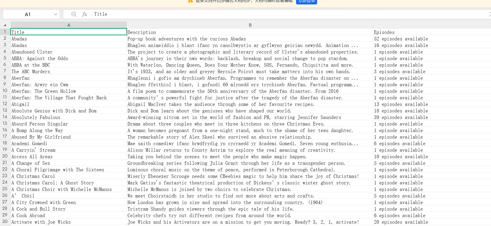

Week 3 – Reflection
This week we learned about web scraping. Basically, it means taking information from a web page and saving it as data. In the workshop we opened the code behind BBC iPlayer, and I could see that every programme title, picture and link has its own tag. A scraping tool finds the content through these tags and puts it into a table. When it was explained in class, it looked easy. You just click on what you want and the tool does the work.
Doing it myself was a bit different. I started with the iPlayer homepage, and the table I got was a mess. One row was a whole category, the programme names were spread out across lots of columns, some boxes were empty, and it even saved buttons like "View all" as if they were programmes. At first I thought I had done something wrong. Then I realised the tool was just copying the way the page is built. So I tried the A–Z page instead, where every programme sits on its own. This time it worked much better, and I got 200 programmes, each with a title, a short description and the number of episodes. I kept the original file and tidied up a copy, deleting the columns I didn't need.

When I actually read through the data, I noticed some strange things. Some descriptions stop halfway with "...", some are in a language I couldn't read, and the number of episodes is written as words, not numbers. The page says there are 277 programmes, but I only got 200, and I still don't know why. So the table looks neat, but it isn't the whole page. It's just what was there on the day I scraped it. I also got curious about why iPlayer puts some programmes at the top, but the data can't answer that for me.
After building my website last week, I felt it looked quite stiff. It had my words on it, but not much design and nothing really interesting to look at. From now on, every time I finish a task and upload it, I hope I can add a little bit of my own design and a few small creative ideas, so the site slowly becomes richer and nicer to look at.